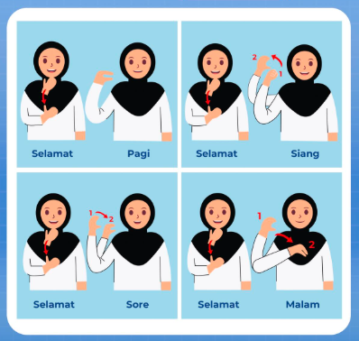

Salam BISINDO
Belajar salam pagi, siang, sore, dan malam dalam bahasa isyarat.

Penjelasan Materi
Materi salam membantu pengguna memahami cara menyampaikan salam dalam berbagai situasi.
Salam merupakan bentuk komunikasi sopan yang sering digunakan dalam kehidupan sehari-hari.